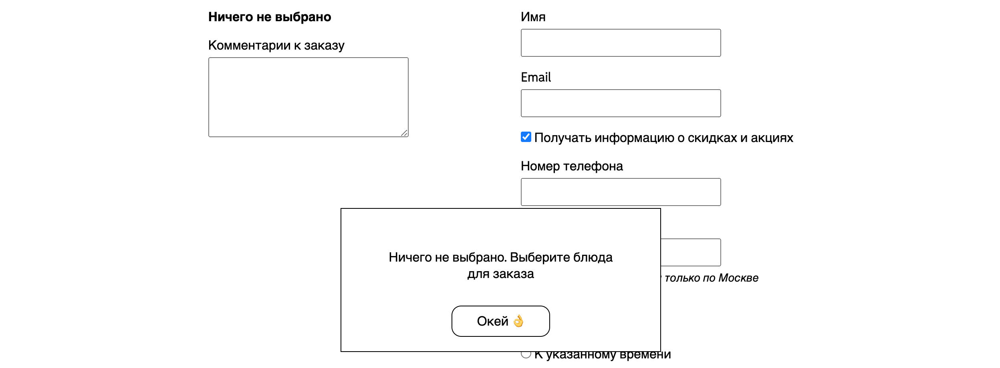
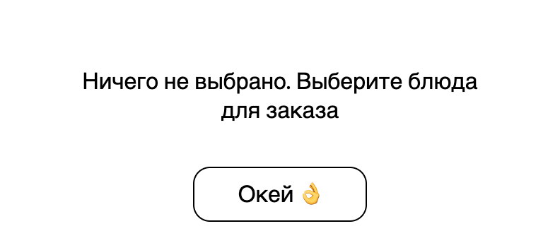
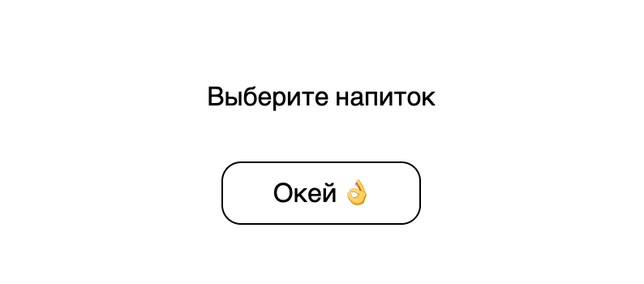
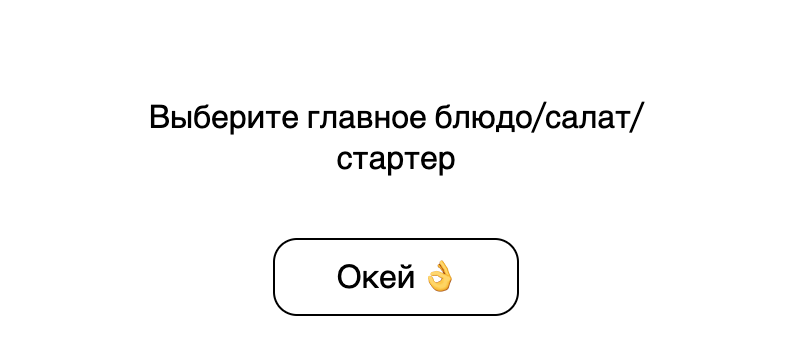
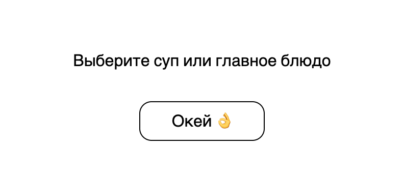
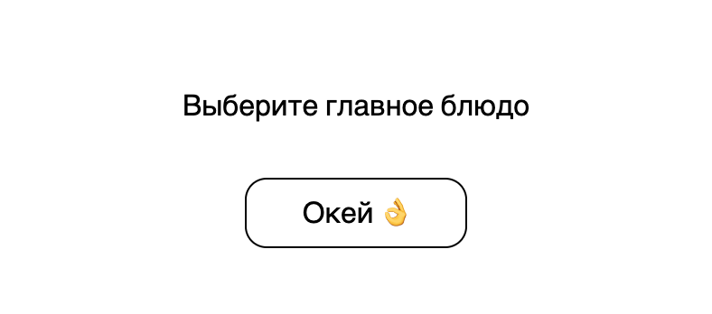

Добавьте блок с доступными для заказа вариантами ланча. Создайте скрипт, проверяющий состав ланча при отправке формы. Реализуйте показ уведомлений для пользователей.
Порядок выполнения
Примерные макеты представлены ниже.
Макет блока с доступными для заказа вариантами:
Макет уведомления:

1. Создайте блок с доступными для заказа вариантами ланча.
Структура блока:
- Заголовок
- Блок с вариантами (grid-контейнер, с 3 колонками на каждой строке)
- Блок каждого варианта ланча (flex-контейнер)
- Блок каждого блюда (flex-контейнер, направление главной оси - сверху вниз)
- Изображение блюда
- Подпись
Изображения с блюдами можно скачать здесь.
Доступные для заказа варианты:
| 1 | 2 | 3 | 4 | 5 |
|---|---|---|---|---|
|
Суп Главное блюдо Салат Напиток |
Суп Главное блюдо Напиток |
Суп Салат Напиток |
Главное блюдо Салат Напиток |
Главное блюдо Напиток |
В отдельном блоке необходимо разместить информацию о десертах. Их можно добавлять в любой вид ланча. Эту информацию нужно также отобразить на странице (поместить ниже подписи; шрифт меньше, чем у подписи на 2 пункта).
Измените свойства для изображений данного блока при наведении на них курсора. Используйте для этого transform с
функциями трансформации translateY и scale.
На видео продемонстрирована работа transform:
2. Создайте скрипт, который будет проверять все ли необходимые блюда добавил пользователь.
Скрипт должен запускаться, когда пользователь отправляет форму. Пользователь может добавлять в заказ произвольные блюда. В итоге у него должен получиться один из вариантов ланчей, описанных выше. Если перечень выбранных блюд не соответствует ни одному из возможных вариантов (комбо), у пользователя не должно быть возможности оформить заказ (форма не должна отправляться), и на странице должно быть выведено уведомление с информацией о недостающих блюдах.
Существует 5 видов уведомлений:
| Текст уведомления | Когда выводится | Изображение |
|---|---|---|
| «Ничего не выбрано. Выберите блюда для заказа» | Не добавлено ни одно блюдо |  |
| «Выберите напиток» | Выбраны все необходимые блюда, кроме напитка |  |
| «Выберите главное блюдо/салат/стартер» | Выбран суп, но не выбраны главное блюдо/салат/стартер |  |
| «Выберите суп или главное блюдо» | Выбран салат/стартер, но не выбраны суп/главное блюдо |  |
| «Выберите главное блюдо» | Выбран напиток/десерт |  |
Уведомление должно создаваться динамически каждый раз, когда при попытке отправить форму скрипт обнаруживает,
что какое-то блюдо не добавлено.
Оно должно отображаться поверх остальных элементов на странице и не менять положение при прокрутке.
Также, его нужно отцентровать по вертикали и горизонтали.
При наведении на кнопку "Окей", изменяется цвет фона и текста кнопки.
При нажатии на кнопку уведомление исчезает.
На видео продемонстрирована работа уведомления:
Защита
Чтобы сдать лабораторную, необходимо выполнить все требования.